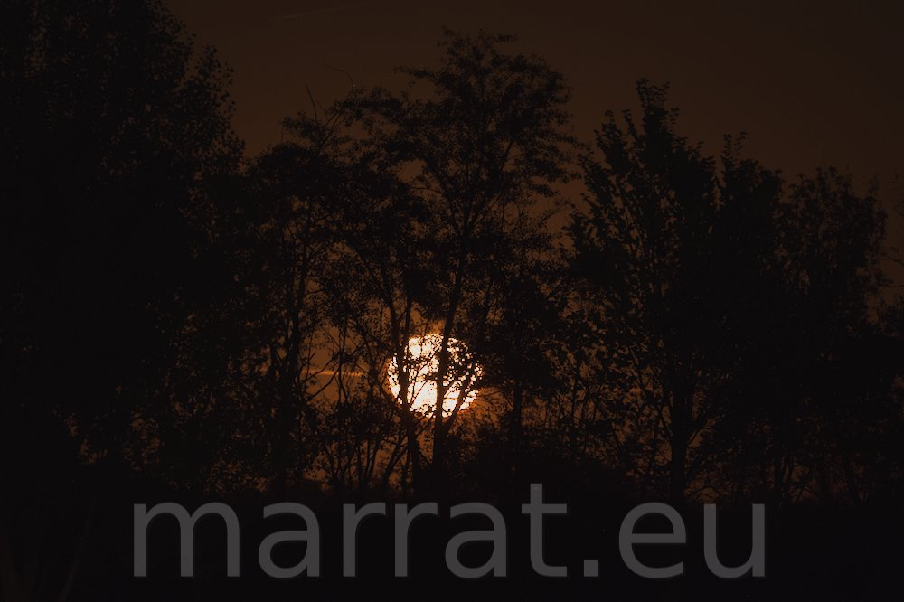
f/5.0 | 1s | ISO 1600 | 171.3 mm
FUJIFILM X-T5 + FUJIFILM 70-300mm f/4-5.6
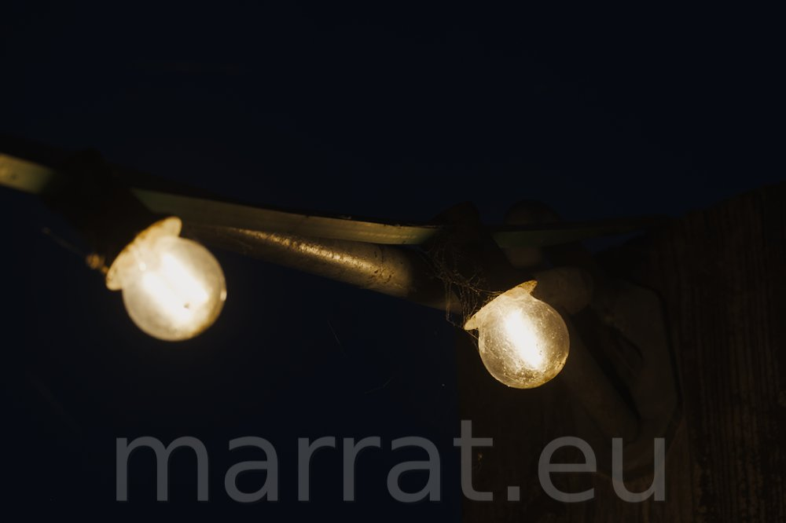
f/8.0 | 1/60s | ISO 1000 | 222.5 mm
FUJIFILM X-T5 + FUJIFILM 70-300mm f/4-5.6
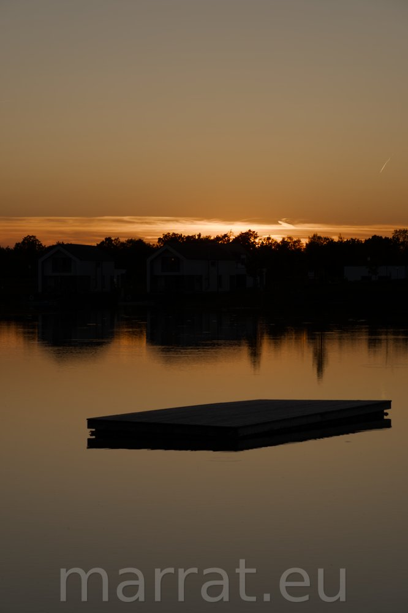
f/10.0 | 1/125s | ISO 125 | 70.0 mm
FUJIFILM X-T5 + FUJIFILM 70-300mm f/4-5.6
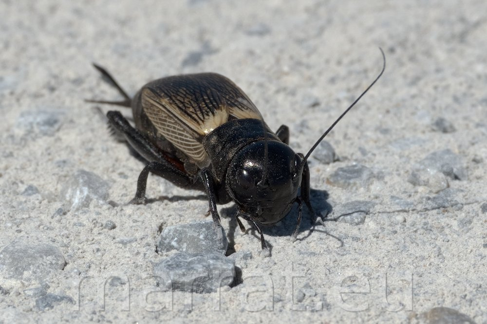
f/10.0 | 1/1000s | ISO 250 | 300.0 mm
FUJIFILM X-T5 + FUJIFILM 70-300mm f/4-5.6
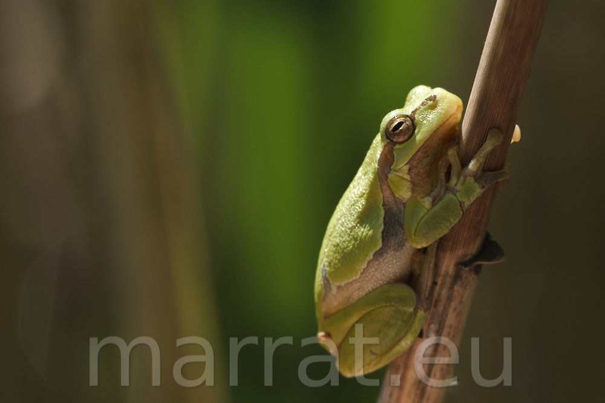
f/10.0 | 1/500s | ISO 500 | 300.0 mm
FUJIFILM X-T5 + FUJIFILM 70-300mm f/4-5.6
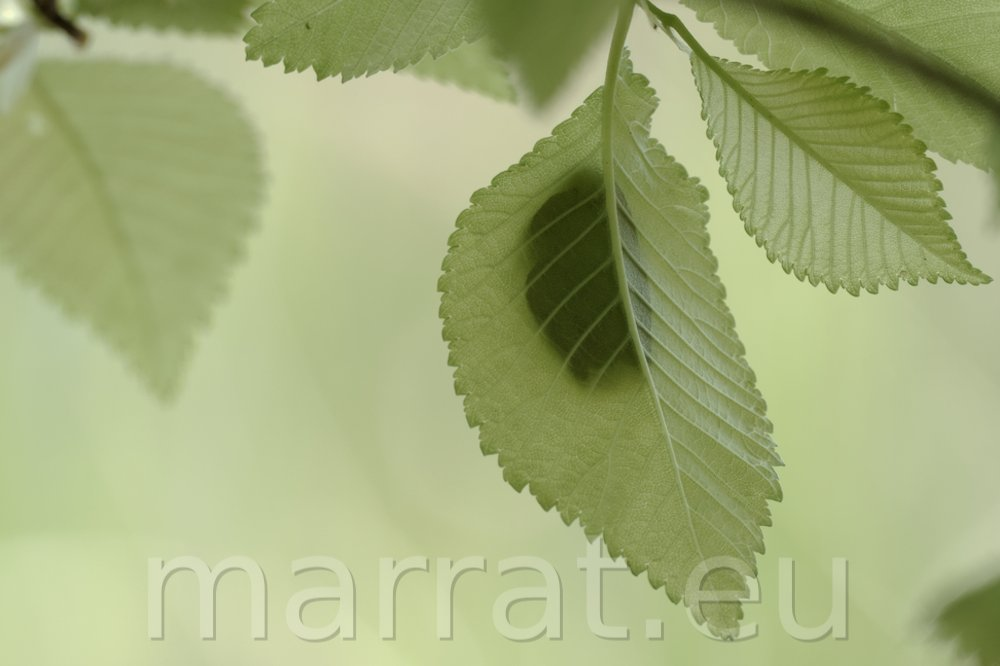
f/8.0 | 1/250s | ISO 500 | 300.0 mm
FUJIFILM X-T5 + FUJIFILM 70-300mm f/4-5.6
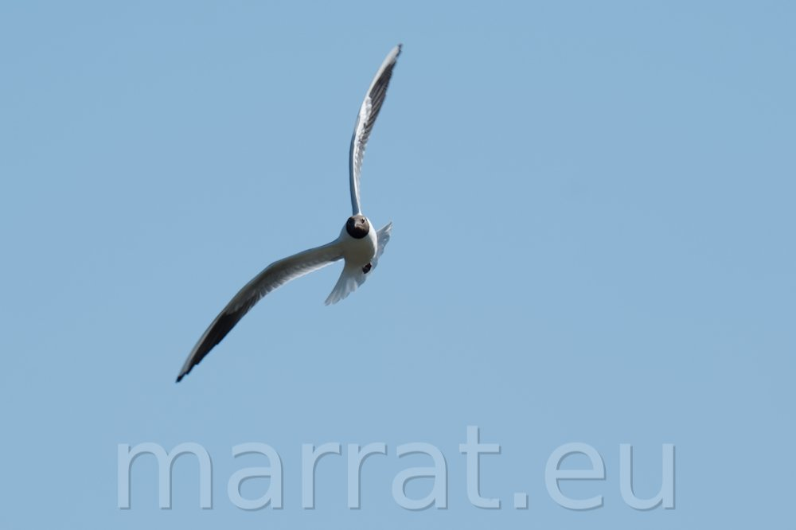
f/9.0 | 1/1000s | ISO 500 | 300.0 mm
FUJIFILM X-T5 + FUJIFILM 70-300mm f/4-5.6
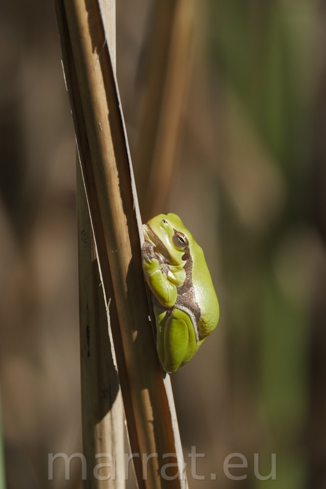
f/9.0 | 1/500s | ISO 200 | 300.0 mm
FUJIFILM X-T5 + FUJIFILM 70-300mm f/4-5.6
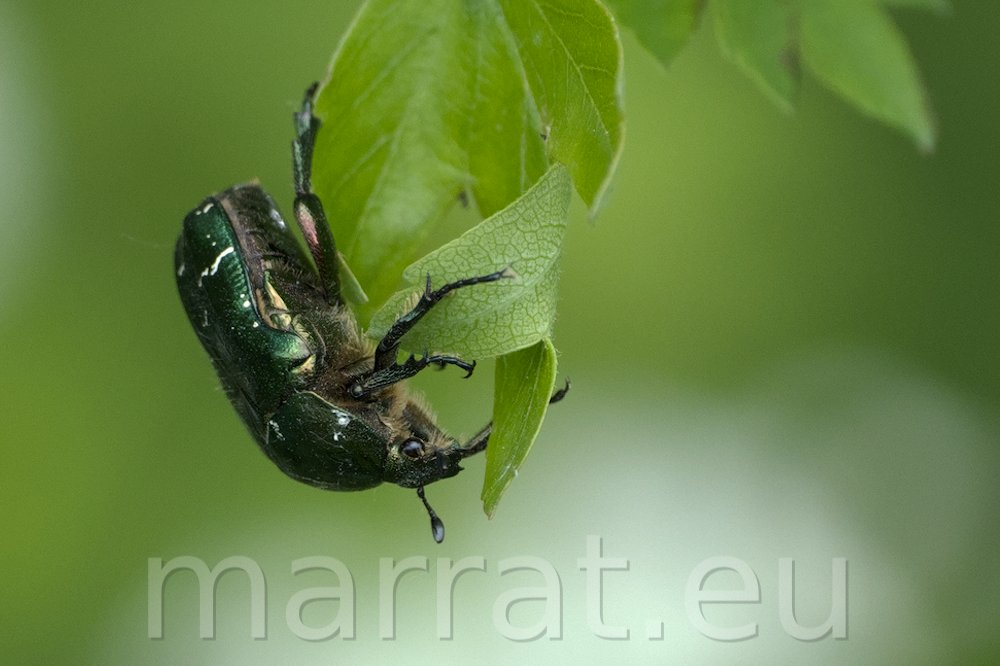
f/5.6 | 1/500s | ISO 1250 | 300.0 mm
FUJIFILM X-T5 + FUJIFILM 70-300mm f/4-5.6
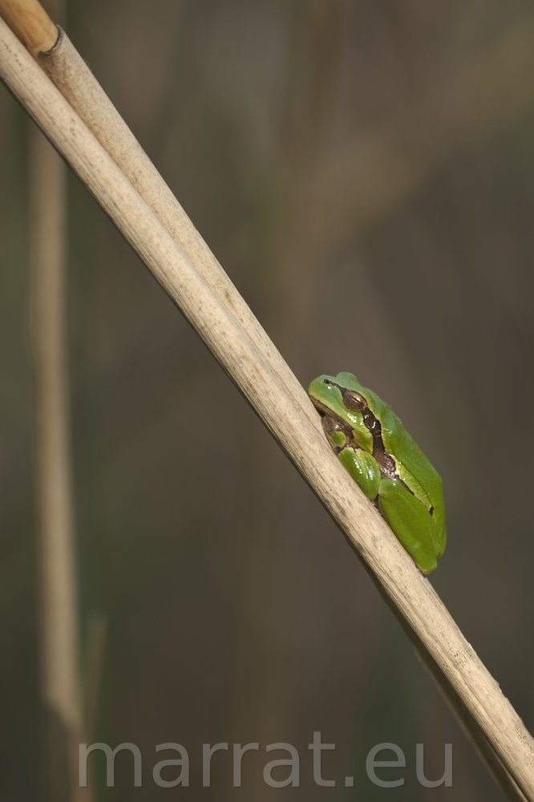
f/5.6 | 1/1000s | ISO 500 | 300.0 mm
FUJIFILM X-T5 + FUJIFILM 70-300mm f/4-5.6
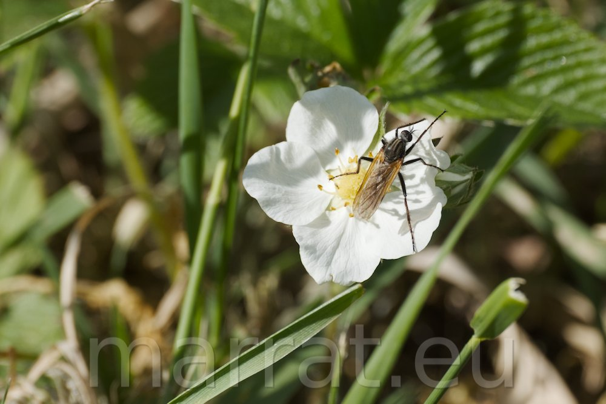
f/8.0 | 1/1000s | ISO 500 | 239.8 mm
FUJIFILM X-T5 + FUJIFILM 70-300mm f/4-5.6
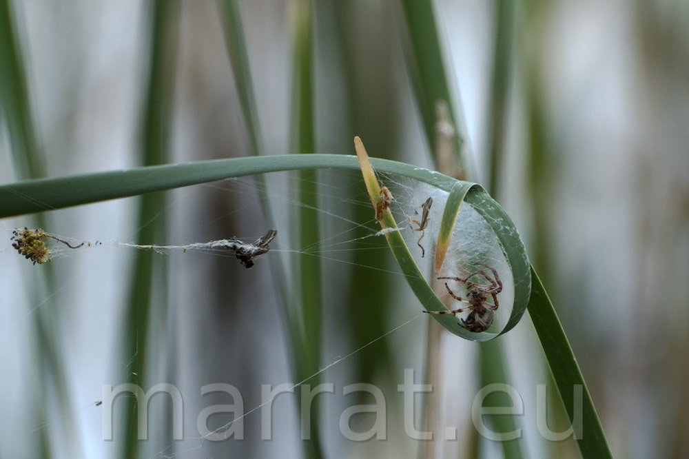
f/6.4 | 1/500s | ISO 400 | 300.0 mm
FUJIFILM X-T5 + FUJIFILM 70-300mm f/4-5.6
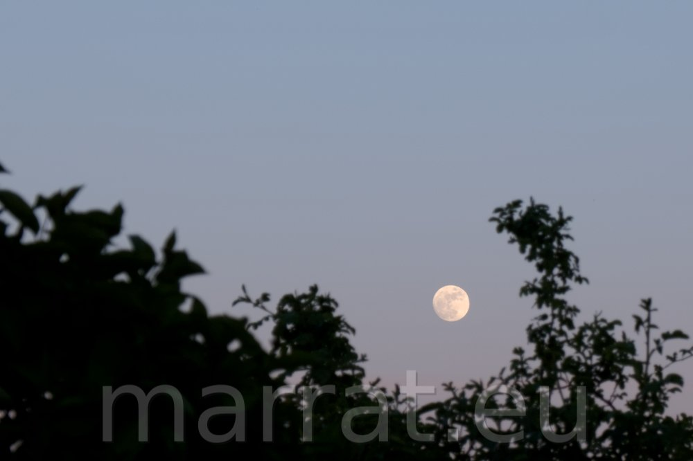
f/8.0 | 1/125s | ISO 800 | 55.0 mm
FUJIFILM X-T5 + FUJIFILM 18-55mm f/2.8-4